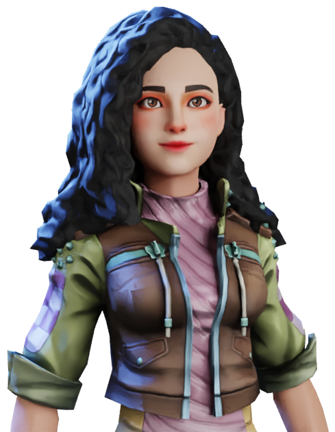

Bringing to you. Aurora!
Free-lance, traditional artist from IndiaHey there! I am Aishwarya/ Aurora. I love working in all mediums like watercolors, oil paints, acrylics, pencil colors, plain pencil or pen. I have been painting for 5 long years and I just love my work. Painting is like meditation and recreation for me. I like to delve deep into the intricacies and make realistic drawings, as much as I do simple cartoonish characters. Nowadays I am drawing more on the side of cartoons, kawaii and chibi. Take some time and explore my site to know more about me and my works.
Contact Us
